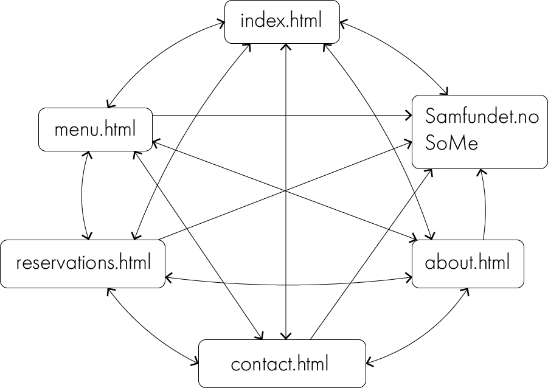

List of files and folders:
"Book here" button removed was removed from the page because we found it unnecessary, and instead of linking to samfundes social media in the html, we implemented it in the footer.
The reservation form contains the input fields name, number of people, date and time, email and extra information. Some explaining text about restrictions, and lyches email address was added above the form.
The date picker is changed from always showing the calendar to a horizontal line, same appearance as the other input fields, with a calendar symbol to the right. The user can either choose a date from the date picker, or else write the date in the input field. This change was made because of the restrictions of using plug-ins.
The input fields were made wider, and the margin left of the form was decreased so that the header, text and form have the same start position. The photo was changed from pai_liten.png to mussels_croped.png for visual purposes. A submit button was added beneath the form, and a red “star” in each required form was also added.
A new html was added, confirmation.html. This is the page the user is sent to when the form is submitted. It has the same styling and image as reservation.html and displays a text that states that the form was successfully submitted.
When visiting the web page, the user will see a slideshow with photos of food, as intended. We decided to remove the “make a reservation” button from the bottom left corner so that the page would have a “cleaner” design.
We decided to remove “contact” from index, so “contact” can be excessed either from the burger menu, or from a button in the information section at the top of the index page. No contact information in index, only in a separate html.
Changed the picture in index_reservation from one of samfundet, to one displaying a dish, mussels.
In about.html, we changed the margin-left to 10% so that it would be visually more similar to the other pages, and the header is in line with the text. We choose not to include text about lyches history, as we intended, because we did not find it necessary.
Changed location. Included the opening hours and isOpen-script in contact.html, accessed from index.html or the burger menu.
The footer was written entirely in Java Scrips and implemented on every html page with styling from footer.css. The footer is the same as the one from samfundet.no such that the pages is connected design wise. We wanted our web page to have a universal design and be facilitated people with impaired vision. With this in mind, the text has been made a bit larger, and the colour a bit brighter.
The final navigation structure is close to the one originally planned, except that information.html was changed to contact.html. Additionally we added an arrow from samfundet and social media to index.html because it should be possible to access Lyches home page from these external pages.
In this project we have all worked together to create the final web page. This makes it difficult to state exactly who did what, but here's a short summary of how each person fulfilled their minimum requirements.
Johanna made the contact.html page, and the others implemented the footer and top bar and helped her make it responsive.
We all made the CSS to our associated html-pages and collaborated to make the main style sheet.
Johanna created the isOpen-script and implemented it in contact.html.
Merete and Johanna made the testing documents, did the live testing and collected and interpreted the test results from the Google Form.
The issue of modularity was met both when it came to the footer and the navigationbar. We solved this by putting the html-code for the items into the appropriate javaScript files, and then inserting in in the appropriate places in all of the htmls by using js. By doing it this way we avoided writing the same html several times, and thus we avoided using unnecessary memory capacity. It was mostly Helene Lavre who worked on this implementation, with assistance from the others in the group.